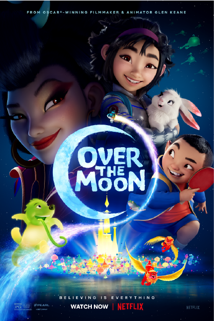

|  |
|---|
Over The Moon เนื้อเรื่องย่อ : Over The Moon (เนรมิตฝันสู่จันทรา) ภาพยนตร์ออริจินัลอนิเมชั่นมิวสิคัลของ Netflix เรื่องราวที่ถ่ายทอดตำนานเทพธิดาแห่งดวงจันทร์ของเอเชีย สู่ผลงานอนิเมชั่นระดับอินเตอร์ ให้ทั่วโลกได้ประทับใจ ผ่านการผจญภัยของ เฟย เฟย เด็กหญิงแสนเฉลียวฉลาดที่เปี่ยมไปด้วยความมุ่งมั่นและใจรักวิทยาศาสตร์ เธอสร้างยานอวกาศขึ้นไปยังดวงจันทร์เพื่อพิสูจน์ว่าเทพธิดาแห่งดวงจันทร์ในตำนานนั้นมีจริง เธอได้มีประสบการณ์กับภารกิจที่ไม่คาดคิด ได้เจอคนพิเศษที่ไม่คาดฝัน และค้นพบดินแดนแสนมหัศจรรย์เหนือจินตนาการ
สามารถดูเต็มๆได้ที่ Netflix คลิกที่ลิ้งก์
|
|---|
|
|---|